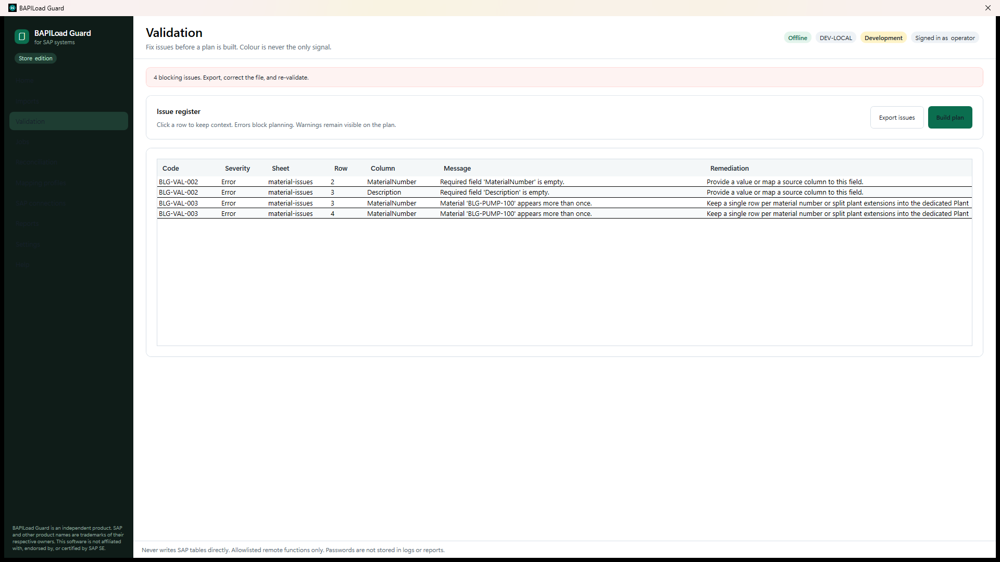
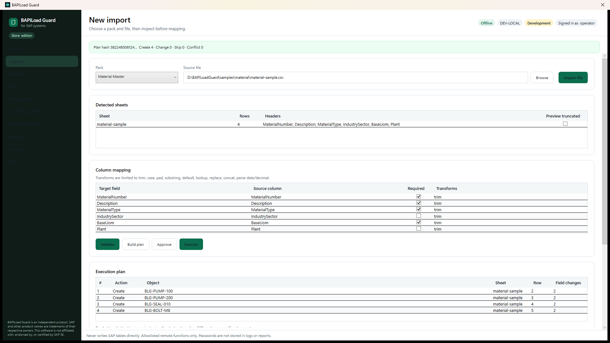

B2B · Windows workstation · Featured on the homepage
BAPILoad Guard — validate Excel/CSV, then load through customer-authorized SAP functions.
Professional Windows tool for SAP master-data analysts, manufacturing engineers, buyers and consultants. Offline validation first; live submit only through allowlisted remote functions on a customer-owned SAP ECC or S/4HANA system. Independent product — not affiliated with, endorsed by or certified by SAP SE. The SAP .NET Connector is not included.
- Offline validation before SAP
- Customer-authorized remote functions only
- Not affiliated with SAP SE

Real app UI: validation results before any SAP submit. Processing stays on the workstation.
B2B sales and evaluation: write to sanjay@plmaiservice.com or use the demo request form. Licensing terms are confirmed by email — we do not publish list prices on this site.
What it does
- Inspect Excel and CSV workbooks on the local PC
- Map columns with a declarative JSON profile (no scripts)
- Validate rows and build a transparent create / change / skip plan
- Submit only customer-allowlisted remote-enabled functions
- Read objects back and classify Verified, Discrepant, Ambiguous or Not Checked
Key capabilities
Offline first
Catch mapping errors, missing fields and duplicates before any network call. No SAP software required for validation.
Guided packs
Manufacturing, commercial, plant-maintenance and document packs. Function names are customer-configured for each landscape.
Execution safety
Plan hashes bind approval. Batches checkpoint. Timeouts are treated as unknown — no silent retry of a call that may already have committed.
Honest boundaries
- Does not include, download or redistribute sapnco.dll — the customer supplies compatible connector files in a folder they own
- Never writes SAP database tables directly; allowlisted remote functions only
- Teamcenter / PLM connectors are out of scope for the current release
Who buys it (B2B)
- Companies running SAP ECC or S/4HANA with master-data and manufacturing load projects
- Consulting partners who need a controlled workstation for customer landscapes
- Teams that want offline validation before any live SAP call

Transparent plan
Review create / change / skip before submit. Plan hashes bind approval.
Offline first
Catch mapping errors before any network call to SAP.
Talk to us about BAPILoad Guard
Request a demo or email sanjay@plmaiservice.com.